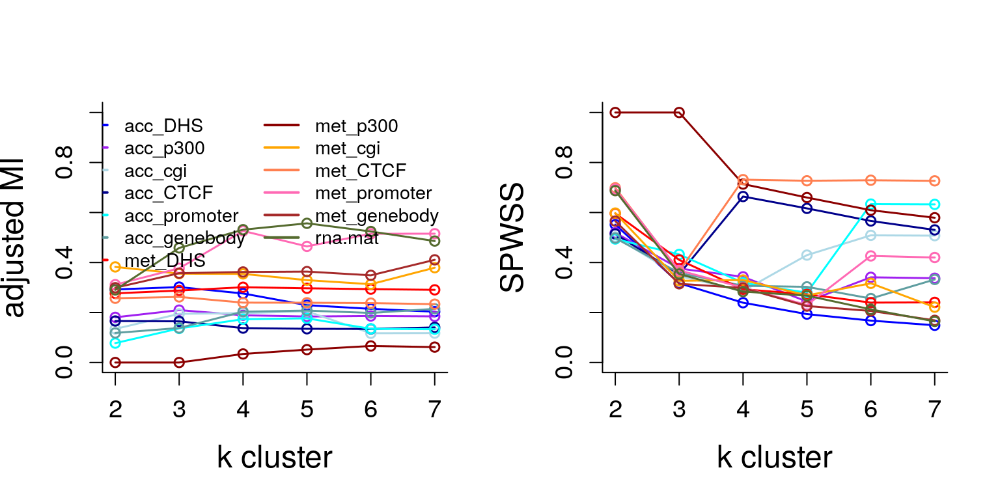

vignettes/MOSAIC_scNMTseq_analysis.Rmd
MOSAIC_scNMTseq_analysis.RmdWe will be analyzing scNMT-seq study via MOSAIC to understand mouse gastrulation on their epigenome and transcriptome profiles to identify multi-omics signatures that characterize stage and lineage.
MOSAIC or Multi-Omics Supervised Integrative Clustering is a response weighted clustering algorithm inspired by survClust, to classify samples into clusters that are relevant to outcome of interest.1
Each feature in a data type is weighed according to its association with binary or categorical outcome of interest, and a weighted distance matrix is computed 2. This reduces the computation space considerably from sample x feature to sample x sample. Samples are then projected into a multi dimensional space preserving the distance between them, and clustered with k-means algorithm to obtain class labels corresponding to outcome.
We ran MOSAIC for 50 rounds of 5-fold cross validation for k=2-7, with stage and lineage as outcome of interest over 13 data types -
and integrating all of them, to mine features that are associated with outcome of interest.
RNA data was standardized, whereas proportion data from other data types was first transformed by taking their folded square root before standardizing.
All the data was considered, including missing-ness, as MOSAIC can handle incomplete information among features and data types. If a data type had more than 5000 features, the feature space was reduce to top 5000 most variable features.
We removed samples belonging to Visceral Endoderms.
We analyze MOSAIC obtained cross validated solutions over two metrics - adjusted Mutual Information (AMI) and Standardized Pooled Within Sum of Squares (SPWSS)
library(BIRSBIO2020.scNMTseq.MOSAIC) #library(knitr) all.rdata<-names(cv.stats) plat.col<-c("blue", "purple", "lightblue","darkblue","cyan", "cadetblue", "red", "darkred", "orange","coral","hotpink","brown", "darkolivegreen") par(mfrow=c(1,2)) for (i in 1:length(all.rdata)){ if(i==1){plot(x = c(2:7), y=apply(cv.stats[[i]]$AMI, 2, median), col=plat.col[i],type="o", xlab="k cluster", ylab="adjusted MI", bty="l", lwd=1.5, ylim=c(0,1), cex.lab=1.5, cex.axis=1.2)} if(i!=1){lines(x = c(2:7), y=apply(cv.stats[[i]]$AMI, 2, median), col=plat.col[i], type="o",lwd=1.5)} } legend("topright", all.rdata, col=plat.col, bty="n", lty=1, lwd = 2,ncol = 2, cex=0.9) for (i in 1:length(all.rdata)){ if(i==1){plot(x = c(2:7), y=apply(cv.stats[[i]]$spwss, 2, median), col=plat.col[i],type="o", xlab="k cluster", ylab="SPWSS", bty="l", lwd=1.5, ylim=c(0,1), cex.lab=1.5, cex.axis=1.2)} if(i!=1){lines(x = c(2:7), y=apply(cv.stats[[i]]$spwss, 2, median), col=plat.col[i], type="o",lwd=1.5)} }

RNA and Met promoter paltforms track close to each other, and are also on top of rest of the platforms in terms of been informative towards stage.
acc platforms are not as informative of stage, acc_DHS seemed to be doing the best with AMI = 0.30. See circomaps below.
| E4.5 | E5.5 | E6.5 | E7.5 | |
|---|---|---|---|---|
| 1 | 44 | 0 | 0 | 2 |
| 2 | 0 | 83 | 8 | 0 |
| 3 | 0 | 0 | 31 | 238 |
| 4 | 59 | 0 | 0 | 0 |
| 5 | 0 | 1 | 186 | 102 |
| Ectoderm | Endoderm | Epiblast | ExE_ectoderm | Mesoderm | Primitive_endoderm | Primitive_Streak | |
|---|---|---|---|---|---|---|---|
| 1 | 0 | 2 | 1 | 0 | 0 | 43 | 0 |
| 2 | 0 | 0 | 83 | 8 | 0 | 0 | 0 |
| 3 | 0 | 79 | 0 | 0 | 167 | 0 | 23 |
| 4 | 0 | 0 | 59 | 0 | 0 | 0 | 0 |
| 5 | 43 | 0 | 191 | 0 | 2 | 0 | 53 |
Let us take a look at some analysis with kmeans
scnmtseq_url <- "https://cloudstor.aarnet.edu.au/plus/s/Xzf5vCgAEUVgbfQ/download?path=%2Foutput&files=scnmtseq_gastrulation_mae_826-cells_orderedFeatures.rds" gastru.mae <- readRDS(url(scnmtseq_url)) X <- get_hvgs_rna(log_counts = assay(gastru.mae, "rna"), n_genes = 5000, use_bio=FALSE, do_plot = FALSE) rna.mat<-scale(t(X), center=T, scale=T) set.seed(123) unwt.dd<-as.matrix(dist(rna.mat[names(stage),])) cmd.mat = cmdscale(unwt.dd, nrow(unwt.dd)-1) unwtkk = kmeans(cmd.mat, 5, nstart=100) unwtkkAMI = aricode::AMI(unwtkk$cluster, stage) unwtkkAMIstage = aricode::AMI(unwtkk$cluster, stage[names(unwtkk$cluster)]) knitr::kable(table(unwtkk$cluster, stage[names(unwtkk$cluster)]), "html", caption=paste0("kmeans rna vs stage, AMI= ",round(unwtkkAMIstage,2)), row.names=TRUE ) unwtkkAMIlin = aricode::AMI(unwtkk$cluster, as.character(lineage.nona[names(unwtkk$cluster)])) knitr::kable(table(unwtkk$cluster, lineage.all[names(unwtkk$cluster)]), "html", caption=paste0("kmeans rna vs lineage, AMI=",round(unwtkkAMIlin,2)), row.names=TRUE )
Let’s take a look at the two platforms, RNA and Met promoter that are most informative for stage.
rnakk = solnk[["rna.mat"]] kkmetp = solnk[["met_promoter"]] kkAMImetpkk = round(aricode::AMI(kkmetp[names(stage)], stage),2) knitr::kable(table(kkmetp[names(stage)], stage), "html", caption=paste0("Met promoter vs stage, AMI=",kkAMImetpkk), row.names=TRUE )
| E4.5 | E5.5 | E6.5 | E7.5 | |
|---|---|---|---|---|
| 1 | 0 | 0 | 29 | 208 |
| 2 | 0 | 26 | 188 | 129 |
| 3 | 103 | 0 | 1 | 0 |
| 4 | 0 | 58 | 7 | 5 |
Let’s see how this looks with RNA solution
kkAMImetprna = round(aricode::AMI(kkmetp[names(rnakk)], rnakk),2) knitr::kable(table(kkmetp[names(rnakk)], rnakk), "html", caption=paste0("Met promoter vs RNA, AMI=",kkAMImetprna), row.names=TRUE )
| 1 | 2 | 3 | 4 | 5 | |
|---|---|---|---|---|---|
| 1 | 0 | 0 | 140 | 0 | 97 |
| 2 | 0 | 25 | 126 | 0 | 192 |
| 3 | 44 | 1 | 0 | 59 | 0 |
| 4 | 2 | 65 | 3 | 0 | 0 |
Interesting to see that even though individual RNA MSOAIC solution (k=5) and Met promoter (k=4) are both informative towards stage with AMI 0.59 and 0.53 respectively, they are conveying slightly different underlying information classifying stage. AMI RNA with Met promoter 0.45
Note, that due to missing-ness in Met Promoter data, we didn’t perform an overlap between common features between RNA and Met Promoter .
MOSAIC finds supervised clusters, with an outcome of interest in mind. Where kmeans might give mixed results. Supervised clustering is much more efficient and helps in sorting out different signals
MOSAIC can run with missing data. However interpretations should be made carefully.
MOSAIC reduces computation space from sample x feature to sample x sample
Efficient in dealing with noisy features
Arora A, Olshen AB, Seshan VE, and Shen R. Pan-cancer identification of clinically relevant genomic subtypes using outcome-weighted integrative clustering. Biorxiv
Xing, E. P., Jordan, M. I., Russell, S. J., & Ng, A. Y. (2003). Distance metric learning with application to clustering with side-information. In Advances in neural information processing systems (pp. 521-528).